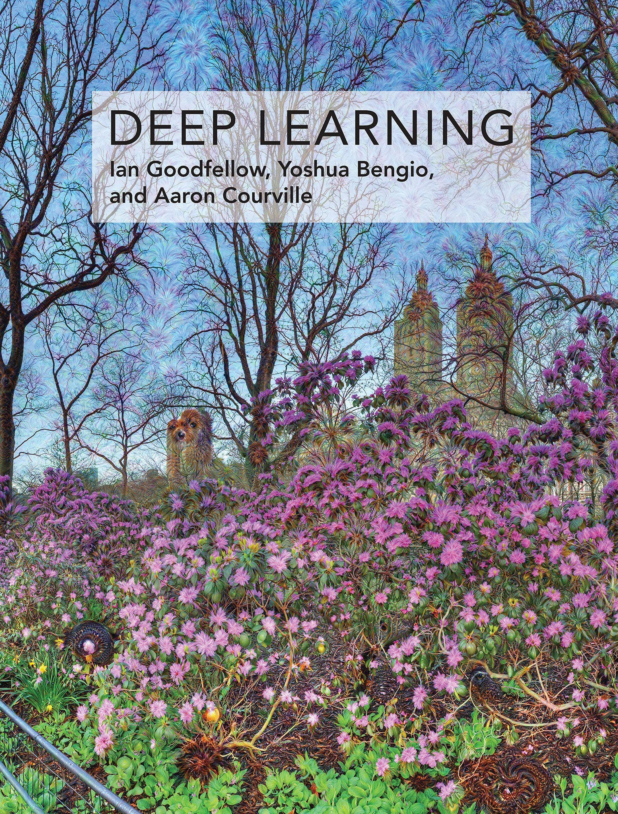
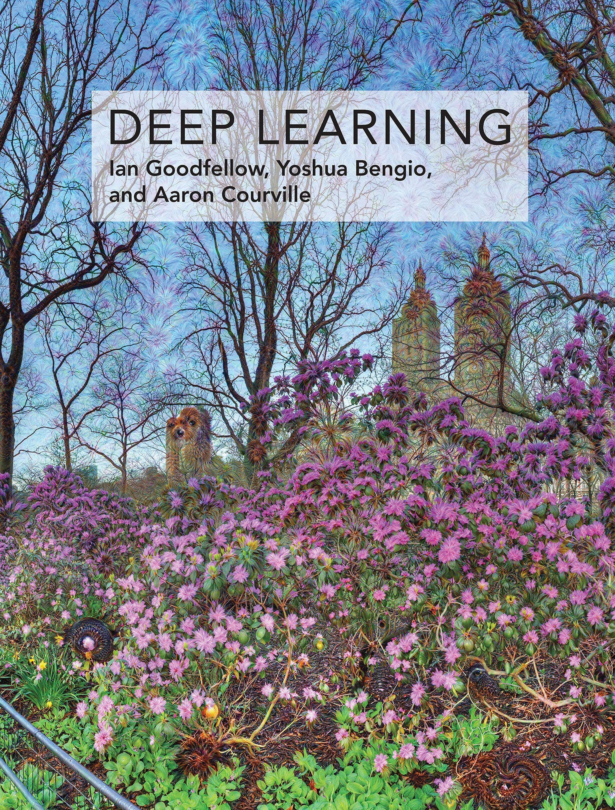

Beginner's Guide to Learn Computer Vision
Book and Course
There is a quick start guide for junior students to master basic Deep Learning knowledge. We prefer belowing teaching materials for beginner.
- Dive into Deep Learning. English Edition, Chinese Edition, Teaching Video Channel.
- Deep Learning.
- Deep Learning with Pytorch.
- Stanford CS231n: Deep Learning for Computer Vision.
Besides the teaching materials mentioned above, the docs of popular deep learning frameworks are also excellent supplementary materials.
 

Papers
Reading the above deep learning materials can help you form understanding of deep learning basics, besides, we recommend following papers to help you further build the transition from deep learning to modern computer vision techniques. The following papers cover several topics of computer vision, and all are milestones of their research area. Through these papers, you can establish a basic understanding of main vision tasks and quickly carry out research work in related fields.
-
Basic Network
- [AlexNet] Imagenet classification with deep convolutional neural networks [NeurIPS link]
- [ResNet] Deep Residual Learning for Image Recognition [Arxiv]
- [Transformer] Attention Is All You Need [Arxiv]
- [ViT] An Image is Worth 16x16 Words: Transformers for Image Recognition at Scale [Arxiv]
- [Swin] Swin Transformer: Hierarchical Vision Transformer using Shifted Windows [Arxiv]
-
Object Detection
- [Fast R-CNN] Fast R-CNN [Arxiv]
- [Faster R-CNN] Faster R-CNN: Towards Real-Time Object Detection with Region Proposal Networks[Arxiv]
- [YOLO] You Only Look Once: Unified, Real-Time Object Detection [Arxiv]
- [FCOS] FCOS: Fully Convolutional One-Stage Object Detection [Arxiv]
- [DETR] End-to-End Object Detection with Transformers [Arxiv]
-
Image Segmentation
- [FCN] Fully Convolutional Networks for Semantic Segmentation [Arxiv]
- [U-Net] U-Net: Convolutional Networks for Biomedical Image Segmentation [Arxiv]
- [DeepLab] DeepLab: Semantic Image Segmentation with Deep Convolutional Nets, Atrous Convolution, and Fully Connected CRFs [Arxiv]
- [PSPNet] Pyramid Scene Parsing Network [Arxiv]
- [Mask R-CNN] Mask R-CNN [Arxiv]
- [Non-local] Non-local Neural Networks [Arxiv]
- [CCNet] CCNet: Criss-Cross Attention for Semantic Segmentation [Arxiv]